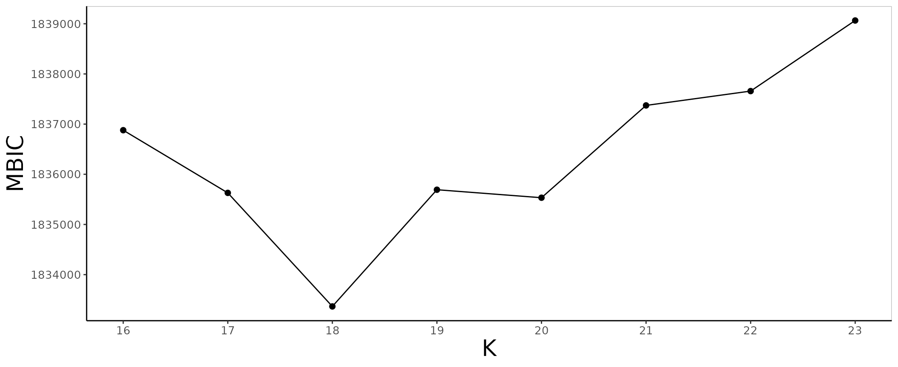
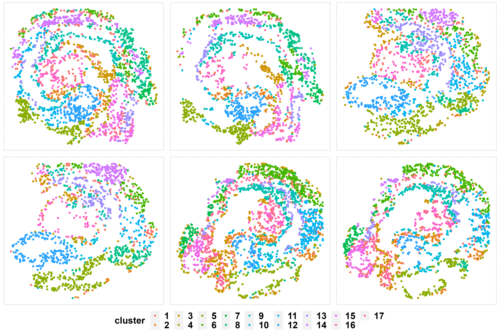
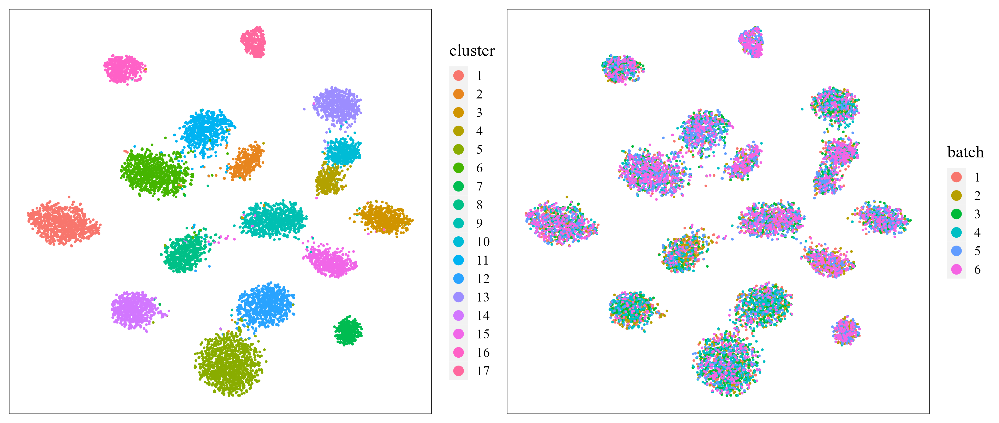
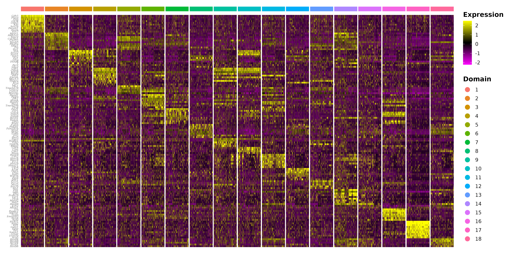

iSC.MEB: seqFISH Data Analysis
Xiao Zhang
2022-10-12
Source:vignettes/iSC.MEB.seqFISH.Rmd
iSC.MEB.seqFISH.RmdIntrduction
This vignette introduces the iSC.MEB workflow for the analysis of seqFISH datasets. The seqFISH dataset contains the high-resolution spatial map from 6 mouse embryo tissue sections generated by a modified version of the seqFISH (sequential fluorescence in situ hybridization) method which allows highly-effective cell segmentation Lohoff T. et al., 2020. The workflow consists of three steps
- Independent preprocessing and model setting
- Integrated clustering using iSC.MEB model
- Downstream analysis (i.e. visualization of clusters and embeddings, combined differential expression analysis)
We demonstrate the use of iSC.MEB to 6 seqFISH datasets that are here, which can be downloaded to the current working path by the following command:
githubURL <- "https://github.com/XiaoZhangryy/iSC.MEB/blob/main/vignettes_data/seqFISH.rda?raw=true"
download.file(githubURL, "seqFISH.rda", mode = "wb")The package can be loaded with the command:
Then load datasets to R
load("seqFISH.rda")Fit an iSC.MEB model
First, we view the the spatial transcriptomics data.
seuList ## a list including six Seurat object
#> [[1]]
#> An object of class Seurat
#> 351 features across 10129 samples within 1 assay
#> Active assay: RNA (351 features, 0 variable features)
#>
#> [[2]]
#> An object of class Seurat
#> 351 features across 7642 samples within 1 assay
#> Active assay: RNA (351 features, 0 variable features)
#>
#> [[3]]
#> An object of class Seurat
#> 351 features across 7654 samples within 1 assay
#> Active assay: RNA (351 features, 0 variable features)
#>
#> [[4]]
#> An object of class Seurat
#> 351 features across 6520 samples within 1 assay
#> Active assay: RNA (351 features, 0 variable features)
#>
#> [[5]]
#> An object of class Seurat
#> 351 features across 11106 samples within 1 assay
#> Active assay: RNA (351 features, 0 variable features)
#>
#> [[6]]
#> An object of class Seurat
#> 351 features across 9373 samples within 1 assay
#> Active assay: RNA (351 features, 0 variable features)Prepare the iSC.MEB Object.
Then, we can create a iSCMEBObj object to prepare for
iSC.MEB models. And next, we performe create adjacency
matrix, dimensionality reduction and set model setting steps in turn.
Here, the adjacency matrix is built based on L2 distance.
Genelist <- row.names(seuList[[1]])
iSCMEBObj <- CreateiSCMEBObject(seuList = seuList, customGenelist = Genelist, verbose = FALSE)
## check the number of genes/features after filtering step
iSCMEBObj@seulist
#> [[1]]
#> An object of class Seurat
#> 351 features across 10072 samples within 1 assay
#> Active assay: RNA (351 features, 0 variable features)
#>
#> [[2]]
#> An object of class Seurat
#> 351 features across 7594 samples within 1 assay
#> Active assay: RNA (351 features, 0 variable features)
#>
#> [[3]]
#> An object of class Seurat
#> 351 features across 7638 samples within 1 assay
#> Active assay: RNA (351 features, 0 variable features)
#>
#> [[4]]
#> An object of class Seurat
#> 351 features across 6499 samples within 1 assay
#> Active assay: RNA (351 features, 0 variable features)
#>
#> [[5]]
#> An object of class Seurat
#> 351 features across 10861 samples within 1 assay
#> Active assay: RNA (351 features, 0 variable features)
#>
#> [[6]]
#> An object of class Seurat
#> 351 features across 9136 samples within 1 assay
#> Active assay: RNA (351 features, 0 variable features)
## Add adjacency matrix list for a iSCMEBObj object to prepare for iSC.MEB model fitting.
iSCMEBObj <- CreateNeighbors(iSCMEBObj, radius.upper = 4)
## run PCA to get low dimensional embeddings
iSCMEBObj <- runPCA(iSCMEBObj, npcs = 15, pca.method = "APCA")
## Add a model setting in advance for an iSCMEBObj object. verbose = TRUE helps outputing the
## information in the algorithm.
iSCMEBObj <- SetModelParameters(iSCMEBObj, verbose = FALSE, coreNum = 8)Fit iSC.MEB
For function iSCMEB, users can specify the number of
clusters K or set K to be an integer vector by
using modified MBIC(BIC) to determine K. Here, we use MBIC
to select optimal number of clusters, which is the default method. User
can use specifying other criteria in function
SetModelParameters or using function
SelectModel to select model after model fitting. Here we
briefly explain how to choose the parameter c_penalty in
the modified BIC. In general, when the number of cluster is considered
to be small, such as less than 10 clusters, c_penalty often
be large, for example 5, 10. And when the number of cluster is
considered to be large, c_penalty often ranges from 0.5 to
2. Most importantly, iSC.MEB is fast, scaling well in terms of sample
size, which allow the user to tune the c_penalty based on
their prior knowledge about the tissues or cells.
iSCMEBObj <- iSCMEB(iSCMEBObj, K = 16:23)
iSCMEBObj <- SelectModel(iSCMEBObj, criteria = "MBIC")
p1 <- SelectKPlot(iSCMEBObj, criteria = "MBIC")
p1
Evaluate performance
The function idents can extract the labels provided by
iSC.MEB method. Therefore, we can evaluate the clustering
performance by some metrics, such as ARI.
LabelList <- lapply(iSCMEBObj@seulist, function(seu) seu@meta.data$celltype_mapped_refined)
ARI <- function(x, y) mclust::adjustedRandIndex(x, y)
ari_sections <- sapply(1:6, function(i) ARI(idents(iSCMEBObj)[[i]], LabelList[[i]]))
ari_all <- ARI(unlist(idents(iSCMEBObj)), unlist(LabelList))
print(ari_sections)
#> [1] 0.5204352 0.5176676 0.5523073 0.4926388 0.5420868 0.5473268
print(ari_all)
#> [1] 0.5156581Visualization
Spatial scatter plot
In addition to metrics, we can use some visualization functions to measure the clustering results, such as the spatial scatter plot.
p2 <- SpaHeatMap(iSCMEBObj, item = "cluster", plot_type = "Scatter", layout.dim = c(3, 2), nrow.legend = 2,
no_axis = TRUE, point_size = 1)
p2
t-SNE plot.
Next, user can visualize the inferred embeddings for biological effects between cell/domain types using two components from either tSNE or UMAP. Here, wo demonstrate the clustering and batch remove performance by t-SNE plot.
iSCMEBObj <- CalculateTSNE(iSCMEBObj, reduction = "iSCMEB", n_comp = 2)
library(patchwork)
p3 <- LowEmbedPlot(iSCMEBObj, item = "cluster", reduction = "TSNE2", point_size = 0.5)
p4 <- LowEmbedPlot(iSCMEBObj, item = "batch", reduction = "TSNE2", point_size = 0.5)
p3 + p4
Combined differential expression analysis
Finally, we also provide functions to fecility user do combined
differential expression analysis. The IntegrateSpaData
function can integrate multiple SRT data based on the our results,
function doDEG provide top differential expression genes,
and function doHeatmap plot heatmap.
seuInt <- IntegrateSpaData(iSCMEBObj, "mouse")
top10 <- doDEG(seuInt, topn = 10)
p5 <- doHeatmap(seuInt, top10$gene)
p5
Session information
sessionInfo()
#> R version 4.1.3 (2022-03-10)
#> Platform: x86_64-conda-linux-gnu (64-bit)
#> Running under: CentOS Linux 7 (Core)
#>
#> Matrix products: default
#> BLAS/LAPACK: /home/Zhangxiao/anaconda3/envs/r41/lib/libopenblasp-r0.3.20.so
#>
#> locale:
#> [1] LC_CTYPE=en_US.UTF-8 LC_NUMERIC=C
#> [3] LC_TIME=en_US.UTF-8 LC_COLLATE=en_US.UTF-8
#> [5] LC_MONETARY=en_US.UTF-8 LC_MESSAGES=en_US.UTF-8
#> [7] LC_PAPER=en_US.UTF-8 LC_NAME=C
#> [9] LC_ADDRESS=C LC_TELEPHONE=C
#> [11] LC_MEASUREMENT=en_US.UTF-8 LC_IDENTIFICATION=C
#>
#> attached base packages:
#> [1] stats graphics grDevices utils datasets methods base
#>
#> other attached packages:
#> [1] patchwork_1.1.2 sp_1.5-0 SeuratObject_4.1.1 Seurat_4.1.1
#> [5] iSC.MEB_1.0 ggplot2_3.3.6 gtools_3.9.3
#>
#> loaded via a namespace (and not attached):
#> [1] utf8_1.2.2 reticulate_1.25
#> [3] tidyselect_1.1.2 htmlwidgets_1.5.4
#> [5] grid_4.1.3 BiocParallel_1.28.3
#> [7] Rtsne_0.16 ScaledMatrix_1.2.0
#> [9] munsell_0.5.0 codetools_0.2-18
#> [11] ragg_1.2.2 ica_1.0-3
#> [13] future_1.27.0 miniUI_0.1.1.1
#> [15] withr_2.5.0 spatstat.random_2.2-0
#> [17] colorspace_2.0-3 progressr_0.10.1
#> [19] Biobase_2.54.0 highr_0.9
#> [21] knitr_1.40 stats4_4.1.3
#> [23] SingleCellExperiment_1.16.0 ROCR_1.0-11
#> [25] ggsignif_0.6.3 tensor_1.5
#> [27] listenv_0.8.0 labeling_0.4.2
#> [29] MatrixGenerics_1.6.0 GenomeInfoDbData_1.2.7
#> [31] polyclip_1.10-0 farver_2.1.1
#> [33] rprojroot_2.0.3 parallelly_1.32.1
#> [35] vctrs_0.4.1 generics_0.1.3
#> [37] xfun_0.32 R6_2.5.1
#> [39] GenomeInfoDb_1.30.1 ggbeeswarm_0.6.0
#> [41] rsvd_1.0.5 bitops_1.0-7
#> [43] spatstat.utils_2.3-1 cachem_1.0.6
#> [45] DelayedArray_0.20.0 assertthat_0.2.1
#> [47] promises_1.2.0.1 scales_1.2.1
#> [49] beeswarm_0.4.0 rgeos_0.5-9
#> [51] gtable_0.3.1 beachmat_2.10.0
#> [53] globals_0.16.1 goftest_1.2-3
#> [55] rlang_1.0.6 systemfonts_1.0.4
#> [57] splines_4.1.3 rstatix_0.7.0
#> [59] lazyeval_0.2.2 spatstat.geom_2.4-0
#> [61] broom_1.0.1 yaml_2.3.5
#> [63] reshape2_1.4.4 abind_1.4-5
#> [65] backports_1.4.1 httpuv_1.6.5
#> [67] tools_4.1.3 ellipsis_0.3.2
#> [69] spatstat.core_2.4-4 jquerylib_0.1.4
#> [71] RColorBrewer_1.1-3 BiocGenerics_0.40.0
#> [73] ggridges_0.5.3 Rcpp_1.0.9
#> [75] plyr_1.8.7 sparseMatrixStats_1.6.0
#> [77] zlibbioc_1.40.0 purrr_0.3.4
#> [79] RCurl_1.98-1.8 ggpubr_0.4.0
#> [81] rpart_4.1.16 deldir_1.0-6
#> [83] viridis_0.6.2 pbapply_1.5-0
#> [85] cowplot_1.1.1 S4Vectors_0.32.4
#> [87] zoo_1.8-10 SummarizedExperiment_1.24.0
#> [89] ggrepel_0.9.1 cluster_2.1.4
#> [91] fs_1.5.2 magrittr_2.0.3
#> [93] GiRaF_1.0.1 data.table_1.14.2
#> [95] scattermore_0.8 lmtest_0.9-40
#> [97] RANN_2.6.1 fitdistrplus_1.1-8
#> [99] matrixStats_0.62.0 mime_0.12
#> [101] evaluate_0.16 xtable_1.8-4
#> [103] mclust_5.4.10 IRanges_2.28.0
#> [105] gridExtra_2.3 compiler_4.1.3
#> [107] scater_1.22.0 tibble_3.1.8
#> [109] KernSmooth_2.23-20 htmltools_0.5.3
#> [111] mgcv_1.8-40 later_1.3.0
#> [113] tidyr_1.2.1 DBI_1.1.3
#> [115] formatR_1.12 MASS_7.3-58.1
#> [117] Matrix_1.4-1 car_3.1-0
#> [119] cli_3.4.0 parallel_4.1.3
#> [121] igraph_1.3.5 DR.SC_2.9
#> [123] GenomicRanges_1.46.1 pkgconfig_2.0.3
#> [125] pkgdown_2.0.6 plotly_4.10.0
#> [127] scuttle_1.4.0 spatstat.sparse_2.1-1
#> [129] vipor_0.4.5 bslib_0.4.0
#> [131] XVector_0.34.0 CompQuadForm_1.4.3
#> [133] stringr_1.4.1 digest_0.6.29
#> [135] sctransform_0.3.4 RcppAnnoy_0.0.19
#> [137] spatstat.data_2.2-0 rmarkdown_2.16
#> [139] leiden_0.4.2 uwot_0.1.14
#> [141] DelayedMatrixStats_1.16.0 shiny_1.7.2
#> [143] lifecycle_1.0.1 nlme_3.1-159
#> [145] jsonlite_1.8.0 carData_3.0-5
#> [147] BiocNeighbors_1.12.0 limma_3.50.3
#> [149] desc_1.4.1 viridisLite_0.4.1
#> [151] fansi_1.0.3 pillar_1.8.1
#> [153] lattice_0.20-45 fastmap_1.1.0
#> [155] httr_1.4.4 survival_3.4-0
#> [157] glue_1.6.2 png_0.1-7
#> [159] stringi_1.7.8 sass_0.4.2
#> [161] textshaping_0.3.6 BiocSingular_1.10.0
#> [163] memoise_2.0.1 dplyr_1.0.10
#> [165] irlba_2.3.5 future.apply_1.9.0